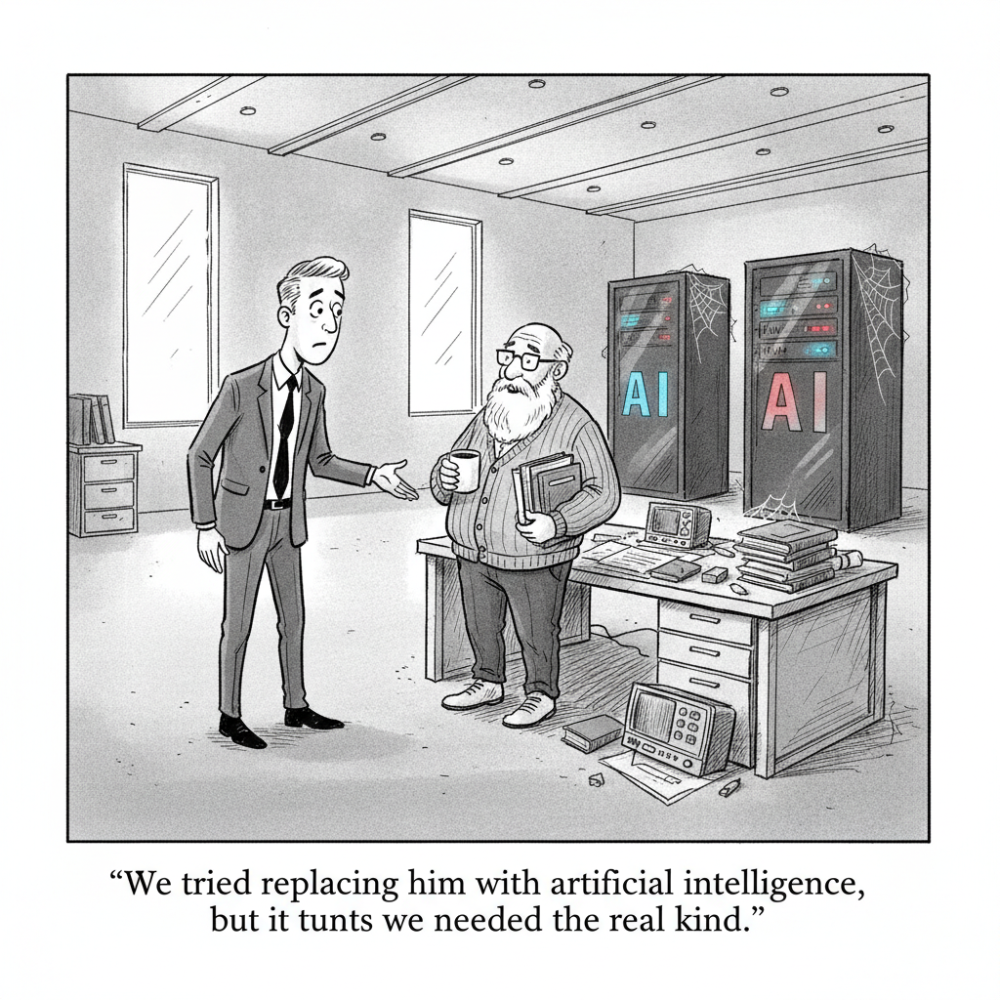

Your daily AI news digest
AI the News That's Fit to Prompt
GLM 5.2 Beats Claude in Our Cyber Benchmarks, Semgrep Says
An open-weight model from China just out-scored the frontier on a security task that matters. Semgrep's researchers pitted GLM 5.2, the freely downloadable model from Zhipu AI, against Claude Code on detecting IDOR (insecure direct object reference) vulnerabilities, and the open model came out ahead, at a fraction of the cost. The title's wink, "we have Mythos at home," captures the mood: you don't need a government-gated frontier model to do serious work.
The honest footnote is that GLM 5.2 still trailed Semgrep's own purpose-built multimodal pipeline, a reminder that a tuned system beats a raw model on a narrow task. But the headline result lands hard in a week when the open-vs-closed gap is the story underneath the story. If a free model from Hangzhou can beat Claude on a real benchmark, the moat that matters is no longer the weights. It is the harness around them.


"We tried replacing him with artificial intelligence, but it turns out we needed the real kind."
Ford Rehires Its 'Gray Beard' Engineers After AI Falls Short
Ford brought back roughly 350 veteran engineers after AI and automated quality systems failed to hold the line on product standards. The company is now putting that hard-won experience to work twice over: training younger staff and improving the very AI tools that came up short. It is the week's cleanest rebuttal to the replacement narrative. The tacit knowledge in a 30-year engineer's head turns out to be a feature the model didn't ship with.

GLM 5.2 Is Free and Beats Claude. So Why Can't Companies Switch?
Nate B. Jones takes the open-model challenge head-on: GLM 5.2 is free to self-host and often beats Claude on center-of-distribution work, yet companies can't just flip the switch. His thesis is that you are not replacing a model call, you are replacing a whole work system, the harness of context, tools, and guardrails built around it. The study guide unpacks why "free and better on paper" still loses to "integrated and trusted."

Washington Asked OpenAI to Not Release GPT-5.6. What's Next?
Matt Maher walks through the first time the U.S. government moved to control access to frontier AI, by force with export controls and by request with OpenAI's GPT-5.6. His read cuts against the panic: the jailbreak fears are overblown, he argues, while the real stakes are economic, who gets to build on the most capable models and who is locked out. The study guide lays out the access-control playbook now forming in Washington.
Meta's Brain2Qwerty Turns Brain Waves Into Text, No Surgery Required
Meta unveiled Brain2Qwerty, an AI system that decodes brain activity into typed text from non-invasive recordings, approaching the accuracy of surgical implants without the surgery. It is early research, not a product, but the direction is striking: a path toward communication for people who can't type or speak that doesn't require opening the skull. The same modeling advances powering chatbots are quietly reaching into neuroscience.

My Favourite AI Tools
Tina Huang tours the AI tools she actually uses every day, mapping them to three zones of her work. Homebase is her thinking layer (Claude Code, Claude chat, Perplexity); the Builder Dungeon is where agentic coding tools and local open-source models live; and Octopus HQ handles team communication and the meta-business. The study guide turns the tour into a practical starter kit for assembling your own stack.

A Professor Says AI Cheating Broke His Exam: 'Integrity Is at Risk'
Brown University economist Roberto Serrano says he has "overwhelming evidence" that students used AI to cheat on an exam, and he thinks the moment demands an in-depth reckoning before the technology hollows out higher education. It is the chronic, less glamorous side of the AI story: not whether models can reason, but what their easy availability does to institutions built on the assumption that a person did the work alone.
Across
- 1. What a model's "weights" do once published (5)
- 5. A book's leaves, or a chatbot's context (5)
- 6. Posed a question to the assistant (5)
Down
- 2. What agents make before acting (5)
- 3. Sibling's daughter (5)
Using Opus 4.8 for a Second Opinion on an MRI
A firsthand account: the author fed an MRI scan to Claude's Opus 4.8 and got an independent read that contradicted a clinician's diagnosis of a torn shoulder tendon. The piece is careful about what it does and doesn't prove, an anecdote, not evidence, but it sits in a growing genre of patients using frontier models to interrogate their own care. It captures both the promise and the unease of a second opinion that costs nothing and answers instantly.

China Catches Up, and Gary Marcus Says the U.S. Bet Wrong
Gary Marcus argues that China's open-source advances could gut the U.S. AI industry through sheer price competition, and that American labs chased an expensive, hard-to-monetize strategy while a cheaper open frontier crept up behind them. Read next to Semgrep's GLM 5.2 result, it stops looking like a contrarian's lament and starts looking like a description of Monday's benchmark.

The Fittest Founder in the Room Got Cancer. He Used AI to Fight Back.
Connor Christou, diagnosed with aggressive non-Hodgkin's lymphoma, leaned on Claude to make sense of his blood work, scans, and wearable data while navigating treatment. It is a vivid, human case study in the same trend as the MRI second-opinion piece: patients turning frontier models into an always-available research partner for the most consequential decisions of their lives.
Reading GPT-5.6 by Its System Card
Zvi Mowshowitz works through the system card for OpenAI's GPT-5.6 family, the Sol, Terra, and Luna models, parsing what the documentation says about capabilities, safeguards, and the safety case behind the government-vetted rollout. It is the careful counterweight to the headline noise: a close read of what the lab actually claims, and where the card is conspicuously quiet.
Tokenmaxxing Is Dead, Long Live Tokenmaxxing
An argument that spending tokens lavishly, once an accidental byproduct of agentic loops, is hardening into a legitimate strategy as models show compounding correctness with more compute.
Apple Vision Pro Exec Reportedly Leaving for OpenAI
Paul Meade, the Apple VP overseeing Vision Pro and AI smart-glasses work, is said to be joining OpenAI's hardware team amid a reshuffle after John Ternus's elevation to CEO.